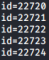
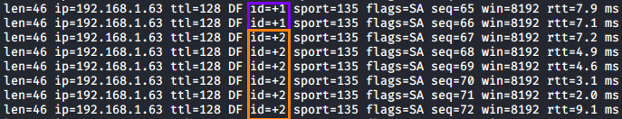

Idle Scan with hping3
Understand how the Idle Scan work at a low level (using hping3)
the first step when running an idle scan is finding a good zombie host
1. find at least one open port on the remote host(zombie)
hping3 -S --scan known [ZombieIP] hping3 -S --scan known 192.168.1.76
→ SYN flag enabled
2. we can detect if the host is a good zombie by estimating the host (zombie) traffic with hping3.
In the following example the ID increments by 1, meaning that the host does not communicate with any machine on the network but only with us, making it a possible zombie candidate
hping3 -S -r [ZombieIP] -p [ZombiePort] hping3 -S -r 192.168.1.76 -p 135
→ allows us to see the relative ID increments instead of the actual ID.
Otherwise we will see the actual ID:
 if the IP ID increases by one, it can be considered a viable candidate.
But we can never be 100% sure because:
▪ We have to validate if it is a global or local increase
▪ Some hosts increase IP ID on a per host basis
-p → sets the destination port, which in our case is 135
3. Now that we have found our target zombie(192.168.1.76) we can use hping3 to craft packets that will be sent to the target host we want to scan with source IP address of our zombie
hping3 -a [ZombieIP] -S -p [TargetPort] [TargetIPaddress] hping3 -a 192.168.1.76 -S -p 139 192.168.1.42
→ spoof the zombie source address, this become the source IP address
-S → SYN flag enabled
-p → destination port of the packet
To know if the TargetPort of the TargetIPaddress is open we have to continue to run the command at the point 2, If in the output the
ID increment is +2 this mean that the TargetPort is open
